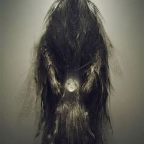

LO! Death hath rear'd himself a throne In a strange city, all alone, Where the good, and the bad, and the worst, and the best, Have gone to their eternal rest.
There shrines, and palaces, and owers Are — not like any thing of ours — Oh no!— On o!— ours never l oo m! Toheaven with that ung odly gloom! Time-eaten towers that tremble not! Resemble no thing that is ours. Around, by lifting winds forg ot, Resignedly beneath the sky The melancholy waters lie.
No holy rays from heaven come down
On the long night-time of that town,
But light from out the lurid sea
Streams up the turrets silently —
Up thrones — up long-forgotten bowers
Of scultur'd ivy and stone flowers —
Up domes — up spires — up kingly halls —
Up fanes — up Babylon-like walls —
Up many a melancholy shrine
Whose entablatures intertwine
The mask — the viol — and the vine.

There open temples — open graves
Upon a far-off happier sea: So blend the turrets and shadows there
That all seem pendulous in air, While from the high towers of the town Death looks gigantically down.But lo! a stir is in the air! \The wave — there is a ripple there! As if the towers had thrown aside, In slightly sinking, the dull tide — As if the turret-tops had given A vacuum in the filmy heaven.
The waves have now a redder glow — The very hours are breathing low — And when, amid no earthly moans, Down, down, that town shall settle hence, All Hades, from a thousand thrones, Shall do it reverence, And Death to some more happy clime Shall give his undivided time. 